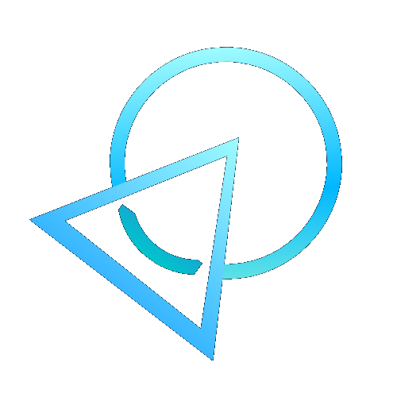

Baixe gratuitamente as extensões desenvolvidas para automatizar tarefas repetitivas, economizar tempo e aumentar sua produtividade.
Converte automaticamente o nome do cliente para o padrão de login utilizado pela Nex Telecom.
Formata automaticamente qualquer nome para o padrão NEX-FIBRA-CLIENTE.
Faça o download da extensão desejada.
Descompacte o arquivo em qualquer pasta.
Acesse chrome://extensions
Ative o modo desenvolvedor.
Clique em Carregar sem compactação e selecione a pasta.
O Nex Tools reúne pequenas extensões desenvolvidas para facilitar tarefas do dia a dia dos colaboradores da Nex Telecom, reduzindo trabalho manual e aumentando a produtividade.